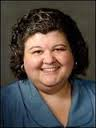

Profesores
Andrea Lowden, MD
- Consultante en Epilepsia Pediátrica. División de Neurología Pediátrica. Centro Medico UT Southwestern
- Sociedad Americana de Neurología
Courtney Wusthoff, MD
- Profesor Asistente de Neurología y Pediatría -neonatología. Centro Médico de la Universidad de Stanford
- Sociedad Americana de Neurofisiología Clínica
Emily Gilmore, MD
- Profesor Asociado de Neurología. Neurointensivista. Hospital New Haven-Yale Universidad de Yale
- Sociedad Americana de Cuidados Neurocríticos
Naymee J Vélez-Ruiz, MD
- Profesor Asociado de Neurología. Universidad de Miami
- Sociedad Americana de Neurología
Nicholas S Abend, MD

- Profesor Asociado de Neurología. Hospital Pediátrico de Philadelphia. Escuela de Medicina Perelman Universidad de Pennsylvania
- Sociedad Americana de Neurofisiología Clínica
- Miembro del Consorcio de Investigación con EEG en los cuidados críticos
Sarah Schmitt, MD
- Profesor Asociado de Neurología. Universidad Médica de Carolina del Sur
- Sociedad Americana de Neurofisiología Clínica
- Miembro del Consorcio de Investigación con EEG en los cuidados críticos
Susan T Herman, MD

- Profesor Asociado de Neurología. Centro Médico Beth Israel Deaconess, Escuela de Medicina Universidad de Harvard
- Sociedad Americana de Neurofisiología Clínica
- Miembro del Consorcio de Investigación con EEG en los cuidados críticos
Suzette M Laroche, MD
- Profesor Asociado de Neurología. Mission Health, Asheville Carolina del Norte
- Sociedad Americana de Neurofisiología Clínica
- Ex-Director y Miembro del Consorcio de Investigación con EEG en los cuidados críticos
- Editor del Handbook of ICU EEG Monitoring, 2013 Demos Publishing
Valia Rodriguez, MD PhD
- Profesor de Neurofisiología Universidad de Aston, Birmingham. Profesor Adjunto del Centro de Neurociencias de Cuba.
- Sociedad Cubana de Neurofisiología Clínica
{kind=link}
{kind=link}
{kind=link}
{kind=link}
{kind=link}
{kind=link}
{kind=link}
{kind=link}